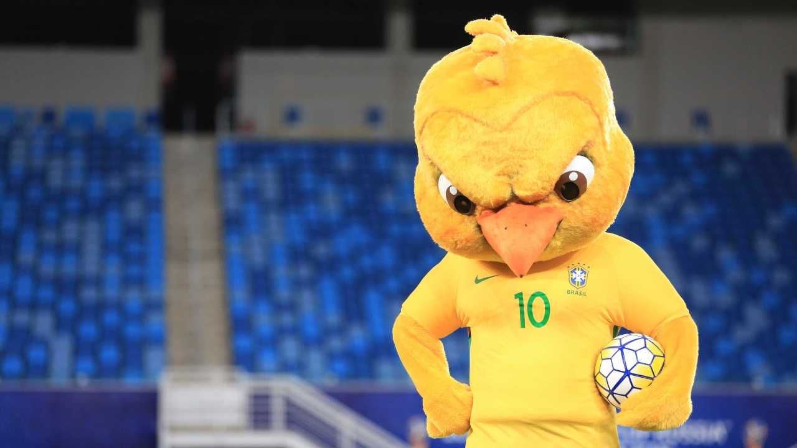
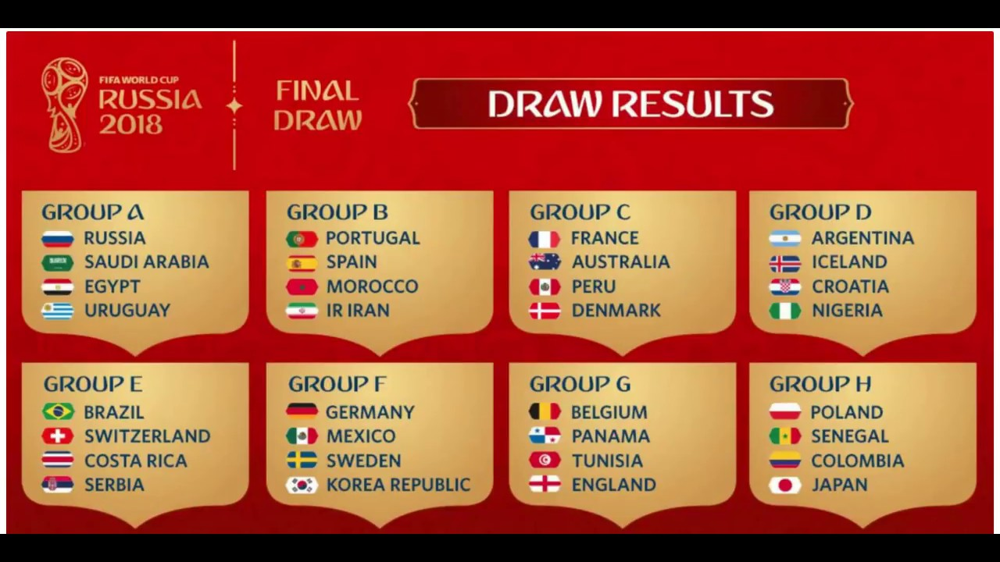

Entenda o fenômeno do ‘Canarinho pistola’, mascote da seleção que bomba nas redes sociais

O Canarinho foi apresentado pela CBF há dois anos, em Natal, antes do duelo entre Brasil e Bolívia pelas eliminatórias da Copa de 2018. A princípio, foi recebido com desconfiança. A CBF chegou a desenvolver uma versão com rosto mais “light” para comparecer a escolas e demais ações sociais com crianças. No entanto, a imagem que pegou mesmo foi a do Canarinho “pistola”, gíria usada nas redes sociais para chamar alguém de “irritado” ou “nervoso”.
Segundo a CBF, a imagem que buscam transmitir é justamente a do torcedor da seleção: apaixonado por futebol, aguerrido, focado nos objetivos, mas tudo isso sem perder a ginga com a bola - explica Ratto, garantindo que o mascote seguirá “enfezado” até o fim da Copa do Mundo de 2018. - O foco total agora é no Mundial. Essa característica enfezada já está consagrada com nosso torcedor.
Fase de grupos da Copa 2018 terá fortes embates como Portugal x Espanha e Bélgica x Inglaterra. Seleção brasileira estreará diante da Suíça, em Rostov

A Fifa sorteou nesta sexta-feira, em cerimônia realizada em Moscou, na Rússia, os oito grupos da Copa 2018. Ao todo, serão 32 seleções na disputa pela taça, que será entregue ao campeão no dia 15 de julho do ano que vem. Os cabeças de chave foram Rússia - país sede -, Alemanha, Brasil , Portugal, Argentina, Bélgica, Polônia e França. Esta ordem foi definida pelo ranking de novembro da entidade máxima do futebol.
Vale ressaltar que a posição da Rússia já estava definida antes do sorteio da Copa 2018 . Por ser a anfitriã, a seleção russa ficou na posição A1, isto é, no Grupo A. Na sequência, foram definidos os grupos dos outros sete cabeças de chave, de B1 a H1. Logo depois disso, os mestres de cerimônia sortearam todas as outras equipes que viram dos potes dois, três e quatro.
No Grupo E, o Brasil pega Suíça, Costa Rica e Sérvia. Veja as datas:
17 de junho (domingo) - 09h00 - Brasil x Suíça , em Rostov
22 de junho (sexta-feira) - 15h00 - Brasil x Costa Rica , em São Petesburgo
27 de junho (quarta-feira) - 09h00 - Brasil x Sérvia , em Moscou